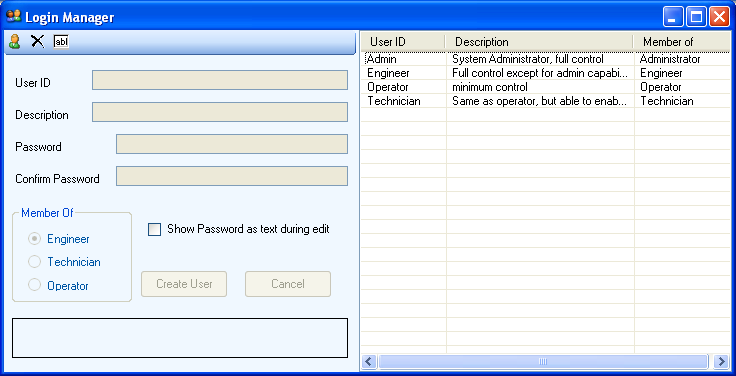

The Login Manager is used to add, edit and delete the user accounts for the application. This feature is only available to the administrator (Admin) account. To access the Login Manager, click User Manager from the Tools menu.

There are four levels of users: Administrator, Engineer, Technician and Operator.
| User Group | Privileges | Default Account |
| Administrator | Full privileges, including user management. | Admin * |
| Engineer | Full privileges, except user management. | Engineer |
| Technician | Same as operator, but can enable/disable test nodes and run nodes individually. | Technician |
| Operator | Cannot create, modify, save or view test programs. | Operator |
* Admin is the only Administrator account allowed. No other Administrator accounts may be added, and Admin may not be modified or deleted.
See Also
Adding a new user | Editing a user | Deleting a user
Astronics Test Systems
Last updated on August 12, 2015 by D. Ignacio